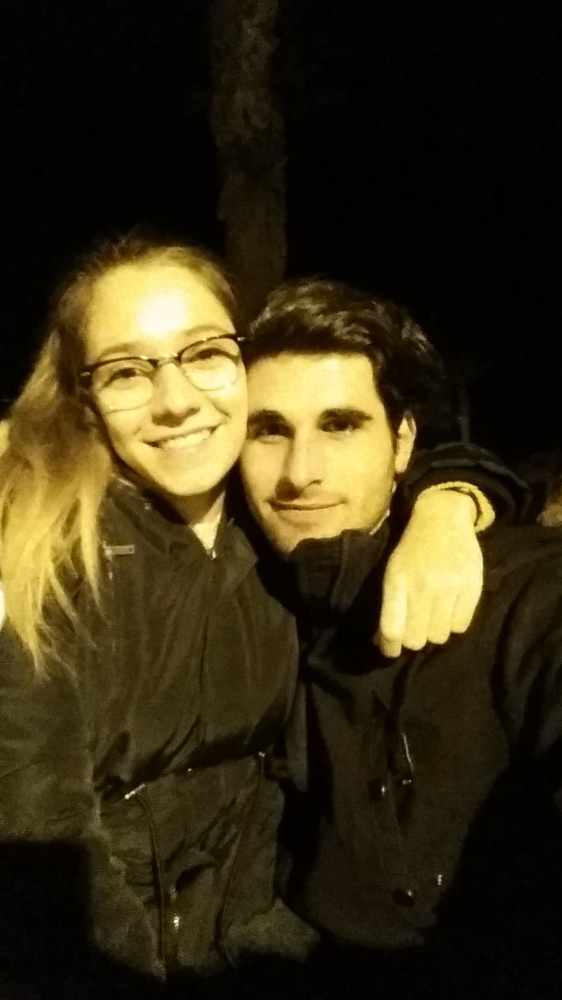

Hay que ver cariño, lo rápido que ha pasado todo, ¿eh?
Parece que fue ayer cuando nos dimos el primer beso, o cuando te acompañé en tren a tu casa después de pasar la noche de año nuevo juntos (aún siento lo del móvil). No podía dejarte ir sola, y tampoco queria separarme de ti, tan sólo quería seguir pasando tiempo contigo, algo que no ha cambiado desde entonces.
Sin duda hemos vivido muchísimas experiencias juntos mi amor, hemos compartido tantos momentos, tantas experiencias, tantos sentimientos…
Y no es para menos, somos la mitad del otro, estamos hechos el uno para el otro, y ya son tres años de vivencias en común. Es por eso que me gustaría hacer memoria de algunos de los momentos mas bonitos e importantes, aunque ya sabes que yo de memoria precisamente no voy sobrado… pero lo voy a intentar, espero que me perdones si se me olvida mencionar algo importante.
Ya ves la foto de arriba, ¿qué hay más especial que nuestra primera foto? Yo sinceramente le tengo un cariño super especial, porque aunque tu ya lo sabes, subí la foto contigo con un orgullo increíble y unas ganas de fardar de novia guapa que no podía con ellas. Ni siquiera yo me creía que estuviese contigo, aún estaba flipando, igual que flipo aún a día de hoy cuando te miro fijamente, aunque me digas que no.
Después de pasar nuestro primer año nuevo juntos vinieron cada vez más y más cosa. Eso sí, no podemos olvidarnos desde luego de los días y días (y noches) que quedábamos en Jerez y nos sentábamos en la Alameda durante horas, ni comíamos ni nos importaba comer (comida, claro). Eran horas de charlar y charlar y no parar de estar a gusto y emocionados con lo que teníamos. Al igual que cuando quedábamos en tu casa los domingos, cualquier otra pareja no habría hecho lo que nosotros, pero es que estábamos tan a gusto juntos tan solo charlando…
También quedabamos muchas veces y nos íbamos al paseo, al fondo del todo, viendo a las personas correr y a las parejas darse el lote, y nosotros no nos quedábamos atrás. No nos importaba el frío en absoluto, tan solo nos importaba estar juntos. El frío no existe si nos tenemos el uno al otro. Winter isn’t coming.
PD: Vaya pelos llevo
A partir de aquí, por falta de memoria y por darle importancia a otras cosas, voy a dar un gran salto en el tiempo, pero tengo que destacar sin duda que luego de todo eso vinieron carnavales, semana santa, primavera trompetera, feria, … En todos ellos hemos tenido algún inconveniente, cosa que siempre nos ha hecho más fuertes como pareja, pero lo único que quiero destacar de todo eso es que, gracias a Dios que estaba contigo…
Antes de ti, jamás disfruté tanto un evento, jamás. Siempre me hiciste falta.